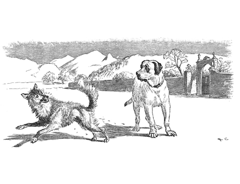
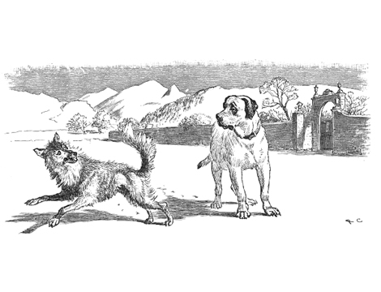

Your appetite grows stronger and stronger as you head back towards the Lean Dog expecting the feast that was promised. You call the dog to come out of his masters yard so he can be eaten. "I shall be delighted to have you eat me. I'll be out as soon as the porter opens the door." the dog explains. But the “porter was in fact a much larger dog whom is known to run wolves out of the village. He chases you out the village where you then lose all of your energy due to waiting on the Lean Dog’s promise.
“Do not depend on the promises of those whose interest it is to deceive you.”